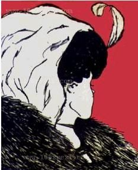

å¾å¤äººé®æå¦ä½å¨ææ¡åºæ¬çç¨åºè¯è¨æè½ä¹åè¿å ¥âè¯ä¹å¦âçå¦ä¹ ãç°å¨æå°±ç®åä»ç»ä¸ä¸ä»ä¹æ¯âè¯ä¹âï¼ç¶åæ¨èä¸æ¬å ¥é¨ç书ãè¿éæ说çâè¯ä¹â主è¦æ¯é对ç¨åºè¯è¨ï¼ä¸è¿èªç¶è¯è¨éçè¯ä¹ï¼å ¶å®æ¬è´¨ä¸ä¹æ¯ä¸æ ·çã
ä¸ä¸ªç¨åºçâè¯ä¹âé常æ¯ç±å¦ä¸ä¸ªç¨åºå³å®çï¼è¿å¦ä¸ä¸ªç¨åºå«åâ解éå¨â(interpreter)ãç¨åºåªæ¯ä¸ä¸ªæ°æ®ç»æï¼é常表示为è¯æ³æ (abstract syntax tree)æè æ令åºåãè¿ä¸ªæ°æ®ç»ææ¬èº«å ¶å®æ²¡ææä¹ï¼æ¯è§£éå¨è®©å®äº§çäºæä¹ã对åä¸ä¸ªç¨åºå¯ä»¥æä¸åç解éï¼å°±åä¸é¢è¿å¹ å¾ï¼å¯¹ç»é¢å ç´ çä¸å解éï¼å¯ä»¥çå°ä¸åçå 容ï¼å°å¥³æè èå¦ï¼ã
解éå¨æ¥åä¸ä¸ªâç¨åºâ(program)ï¼è¾åºä¸ä¸ªâå¼â(value)ãç¨å¾å½¢çæ¹æ³è¡¨ç¤ºï¼è§£éå¨çèµ·æ¥å°±åä¸ä¸ªç®å¤´ï¼ç¨åº ===> å¼ãè¿ä¸ªæè°çâå¼âå¯ä»¥å ·æé常广æ³çå«ä¹ãå®å¯è½æ¯ä¸ä¸ªæ´æ°ï¼ä¸ä¸ªå符串ï¼ä¹æå¯è½æ¯æ´å å¥å¦çä¸è¥¿ã
å ¶å®è§£éå¨ä¸æ¢åå¨äºè®¡ç®æºä¸ï¼å®æ¯ä¸ä¸ªå¾å¹¿æ³çæ¦å¿µãå ¶ä¸å¥½äºä½ å¯è½è¿æ²¡ææè¯å°ãå Python ç¨åºï¼éè¦ Python 解éå¨ï¼å®çè¾å ¥æ¯ Python 代ç ï¼è¾åºæ¯ä¸ä¸ª Python éé¢çæ°æ®ï¼æ¯å¦ 42 æè âfooâãCPU å ¶å®ä¹æ¯ä¸ä¸ªè§£éå¨ï¼å®çè¾å ¥æ¯ä»¥äºè¿å¶è¡¨ç¤ºçæºå¨æ令ï¼è¾åºæ¯ä¸äºçµä¿¡å·ã人èä¹æ¯ä¸ä¸ªè§£éå¨ï¼å®çè¾å ¥æ¯å¾åæè 声é³ï¼è¾åºæ¯ç¥ç»å ä¹é´äº§ççâæ¦å¿µâãå¦æä½ äºè§£ç±»åæ¨å¯¼ç³»ç» (type inference)ï¼å°±ä¼åç°ç±»åæ¨å¯¼çè¿ç¨ä¹æ¯ä¸ä¸ªè§£éå¨ï¼å®çè¾å ¥æ¯ä¸ä¸ªç¨åºï¼è¾åºæ¯ä¸ä¸ªâç±»åâãç±»åä¹æ¯ä¸ç§å¼ï¼ä¸è¿å®æ¯ä¸ç§æ½è±¡çå¼ãæ¯å¦ï¼42 对åºçç±»åæ¯ intï¼æ们说 42 被æ½è±¡ä¸º intã
æ以âè¯ä¹å¦âï¼åºæ¬ä¸å°±æ¯ç 究åç§è§£éå¨ã解éå¨çåçå ¶å®å¾ç®åï¼ä½æ¯ç»æé常精巧微å¦ï¼å¦æä½ ä»å¤æçè¯è¨å ¥æï¼æææ°¸è¿ä¹å¦ä¸ä¼ãæ好çèµ·æ¥æ¹å¼æ¯åä¸ä¸ªåºæ¬ç lambda calculus ç解éå¨ãlambda calculus åªæä¸ç§å ç´ ï¼å´å¯ä»¥è¡¨è¾¾ææç¨åºè¯è¨çå¤æç»æã
ä¸é¨è®²è¯ä¹ç书å¾å°ï¼ç°å¨æ¨èä¸æ¬æè§å¾æ·±å ¥æµ åºçï¼ãProgramming Languages and Lambda Calculiããåªéè¦çå®ååé¨åï¼Part I å IIï¼100æ¥é¡µï¼å°±å¯ä»¥äºãè¿ä¹¦å¥½å¨ä»ä¹å°æ¹å¢ï¼å®æ¯ä»é常ç®åçå¸å°è¡¨è¾¾å¼ï¼èä¸æ¯ lambda calculusï¼å¼å§è®²è§£ä»ä¹æ¯éå½å®ä¹ï¼ä»ä¹æ¯è§£éï¼ä»ä¹æ¯ Church-Rosserï¼ä»ä¹æ¯ä¸ä¸æ (evaluation context)ãå¨è®©ä½ ç解äºè¿ç§ç®åè¯è¨çè¯ä¹ï¼æäºè¶³å¤çä¿¡å¿ä¹åï¼æåè¯ä½ æ´å¤çä¸è¥¿ãæ¯å¦ lambda calculus å CEKï¼SECD çæ½è±¡æº (abstract machine)ãç解äºè¿äºæ¦å¿µä¹åï¼ä½ å°±ä¼åç°ææçç¨åºè¯è¨é½å¯ä»¥æ¯è¾å®¹æçç解äºã